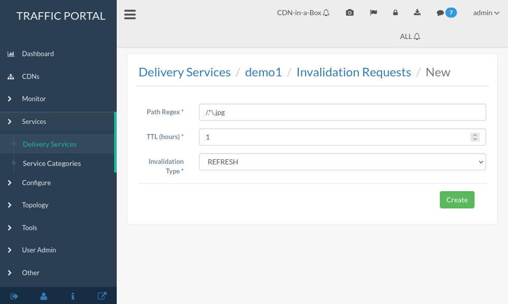

Invalidating content on the CDN is sometimes necessary when the Origin was mis-configured and something is cached in the CDN that needs to be removed.
Implementation Detail
Given the size of a typical Traffic Control CDN and the amount of content that can be cached in it, removing the content from all the caches may take a long time. To speed up content invalidation, Traffic Control does not try to remove the content from the caches, but it makes the content inaccessible using the regex_revalidate plugin for Apache Traffic Server. This forces a “re-validation” of the content.
To invalidate content for a specific Delivery Service, follow these steps:
Fill out this form. The “Path Regex” field should be a PCRE-compatible regular expression that matches all content that must be invalidated - and should not match any content that must not be invalidated. “TTL (hours)” specifies the number of hours for which the invalidation should remain active. Best practice is to set this to the same as the content’s cache lifetime (typically set in the Origin’s Cache-Control response header). Invalidation Type describes how content will be invalidated.

Fig. 31 The ‘new content invalidation submission’ Form
Click on the Create button to finalize the content invalidation.